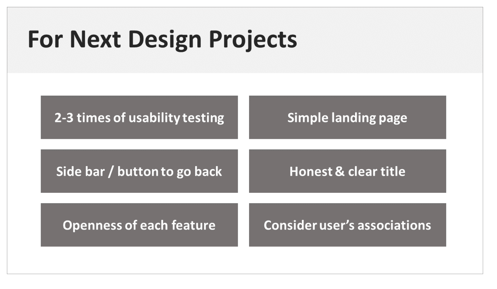

1. Overview
- My Role: UX Designer (from competitor analysis to usability testing)
- Timeline: September 2017 - October 2017 (1 month in total)
- Tools: Microsoft PowerPoint, Prott
After becoming attracted by the world of user experience design, I started to learn basic UX principles at CareerFoundry. Here, I was provided with an assignment to create a vocabulary learning application by using UX fundamentals, and I created Enjoy HSK - a vocabulary learning application for the users who want to prepare for HSK examination.
2. Competitor Analysis
Before moving onto the designing process, I needed to understand the existing market and find what types of features are provided by similar applications. It would also become great inspiration for further steps, such as wireframing. Hence, for this step, I picked 3 vocabulary learning applications, and conducted competitor analysis. The applications were analysed based on the questions as follows:
- What makes it a successful product in terms of meeting the goals of its users?
- What the designers did to make it a successful product, again in terms of the users?
- How do I feel using this product?
- How can I make it better?
Through the analysis session, I could get an idea about the features that can be added to my application. Then, I move onto the next step to listen to real users and find out what they feel.
3. User Research
After analysing some prospective competitors, I arranged user interview sessions 3 people. The sessions were for listening to users' opinions, which are invaluable for UX Designers, and gather insights regarding the creation of the application.
Through the interviewees, I could gather the following insights:
- Users study vocabularies for communication.
- Users want more elements than only learning or studying - but entertainment, practice, test, context, etc.
- Users want to check their learning progress.
- Users want to feel like they are making interaction in the application.
- Users do not want to be interrupted by pop-up advertisements.
4. User Personas
I created 3 user personas as the representatives of my prospective users - based on the insights and answers of each interviewee. It was a great opportunity to anticipate users' behaviours, thinking and feeling, and their needs and frustrations.
Among the behaviours, feeling and problem statements that I stated for each persona, I picked 2 most important tasks that users will do whilst they use a vocabulary learning application, and analysed the tasks in detail - to learn the steps that users will take and apply those for Enjoy HSK's wireframes and prototype.
5. Task Analysis & User Flows
Since I gathered insights through user research and persona creations, I needed to organised the tasks and other information by information architecture steps. Thus, as a part of the information architecture process, I analysed the following tasks, and created user flow charts to check the detailed steps and decide the features that should be added to Enjoy HSK:
- To start the application
- To take a vocabulary test
Through the analysis and organisation process, I could arrange the possible circumstances and think of the title of each feature. Most importantly, I could feel like accompanying users on the journey to achieve their goals, thinking of ways to make each step as brief and easy as possible.
6. Wireframing & Prototyping
Finally, after analysing anticipated user tasks and defining the features of Enjoy HSK, I started to create low-fidelity wireframes using papers and a pencil. I really enjoyed this step, feeling the pleasure of making a usable and touchable service myself, and I created a prototype using Prott, based on the following standards:
- To let users check HSK vocabularies based on their levels
- To let users save the words whenever they want
- To let users test themselves with a timer - feeling they are taking a real test
In addition, the prototype was revised once to minimise users' confusion and merge the duplicated features.
7. Usability Testing
I always believe listening to users' feedback before launching a digital products or service is a must. Therefore, with the first version of the prototype, I conducted usability testing session to see how users feel about the application and find methods to improve the quality and the usability of Enjoy HSK. 3 people participated, and I analysed the comments and worked on solutions based on Jakob Nielsen's error severity rating scale.
The improvement methods I found in this session are as follows:
- To add ‘Sign up’ button on the top right or next to the ‘Exit’ button located at the bottom
- To add back button or a bar which shows the overall menu on the pages which do not have any feature to go back to the last page
- To divide ‘Edit My Profile’ into ‘Edit My Profile’ and ‘Edit Password’
- To relocate 'Ask a Teacher' to somewhere else, but extra tests will be needed to decide where to relocate the feature
8. Lesson from the Project
I felt great pleasure as I could experience the brief UX design progress by making Enjoy HSK. By finding out users' needs and creating a product based on research results, I have become to have more interest in UX design and make more products that can bring the better experience and pleasure to users' lives and routines.
In addition, I am working on another prototype of Enjoy HSK in higher fidelity to let users make more detailed interaction with the application. The mid and high-fidelity prototypes will be updated as soon as created.
